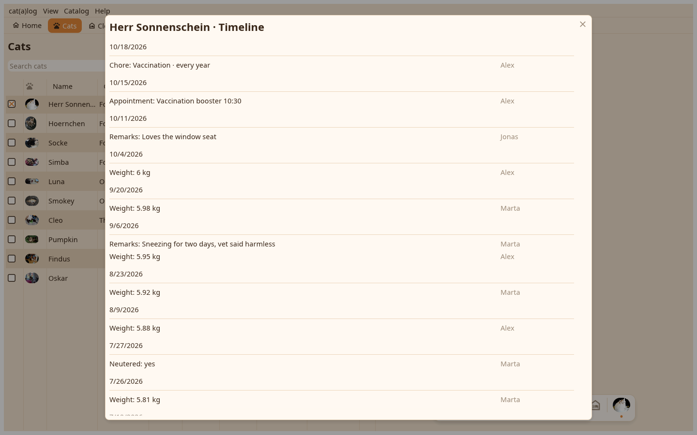

A field's history reads as a diary, the day over what was written on it; the timeline lists everything that happened to one cat or home.

From the ⋮ on a row: every value with its date and author, a tap corrects, the bin removes, the arrow brings a removed one back; the eye shows removed values. A number's history is the graph: week, month, year, all or a custom range, the smoothed line and the trend, "Copy graph as image" for a messenger.
Values, photos, moves, chore ticks and appointments in order. A click on a move opens the move dialog set to that move and corrects where to and when; a home's timeline lists its cats' arrivals and departures. Appointments and chores open their editors, a chore's done day its log.